Time Varying Parameters and Stochastic Volatility in Error Correction Models
Franz X. Mohr
Source:vignettes/tvp-sv-vec.Rmd
tvp-sv-vec.RmdIntroduction
The companion vignette on TVP-SV-VAR models describes what the
arguments tvp and error do and which priors
they require. They mean the same thing for a vector error correction
model, and create_bvecmodel takes them in the same way.
What changes is the object they are applied to, and that change is not
cosmetic: in a VEC model the time varying block includes the
cointegration term, so the model allows the long-run relationship itself
to move.
The estimated model is
with of rank . The coefficients of the non-cointegration part and the loadings follow random walks and is the stochastic volatility specification of the VAR vignette. The cointegration vectors get a state equation of their own,
which is the specification of Koop, León-González and Strachan
(2011). A constant coefficient VEC model instead puts a matric-variate
prior on the cointegration space, so add_priors asks for
different arguments in the two cases: coint$v_i and
coint$p_tau_i for a constant model, coint$rho
for a time varying one.
Data
Data set at_macrodata contains, among the domestic
series of Austria, a short-term interest rate (r), a
long-term interest rate (lr) and inflation
(Dp). The model uses the three series in percent per
quarter from 1979Q2 to 2019Q4 and asks the question this model is for,
and which Koop, León-González and Strachan (2011) ask of UK data:
whether the long-run relationship between the two rates and inflation is
the same at the end of the sample as it was at its beginning.
library(bvartools)
data("at_macrodata")
data <- window(at_macrodata[["domestic"]][, c("r", "lr", "Dp")], end = c(2019, 4)) * 100
plot(data, main = "Austrian interest and inflation rates")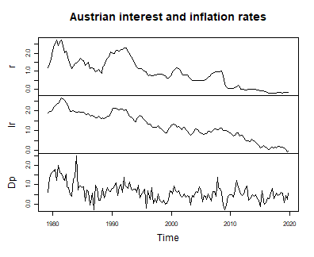
plot of chunk data
Model set-up
model <- create_bvecmodel(data, p = 2, r = 1, const = "unrestricted",
tvp = TRUE, error = "sv+covar", varsel = "bvs",
iterations = 3000, burnin = 1000)
model[["model"]][["algorithm"]]
#> [1] "VecTvpStochvol"p is the lag order of the level VAR, so the model
contains
lag of the differenced series. The cointegration rank is fixed at one,
which for a term structure is the natural specification.
Models with a prior on the cointegration space are sensitive to the
scale of the series in the error correction term, and
scale_error_correction can divide them by the standard
deviation of their differences. This model is estimated on the series as
they are, for a reason explained with the priors below, so nothing has
to be rescaled after estimation either.
Priors
model <- add_priors(model,
coef = list(v_i = 1, v_i_det = 1 / 10,
shape = 3, rate = 0.000001, rate_det = 0.01),
coint = list(rho = 0.999),
sigma = list(shape = 3, rate = 0.01,
mu = 0, v_i = 0.01,
state_variance = 0.05, offset = 1e-8),
varsel = list(inprior = 0.5, exclude_det = TRUE))Arguments coef and sigma are the ones of
the VAR vignette: prior precisions for the initial state of the
coefficients, an inverse gamma prior for the variances of their state
equation, and the prior of the stochastic volatility block.
coef$rate is two orders of magnitude smaller than in the
VAR vignette, and the series in the error correction term are left
unscaled. Both choices address the same problem. The coefficient paths
can absorb most of the residuals of the short-term interest rate
equation, whose residual standard deviation is then reported at a small
fraction of the one of a least squares fit of the same regressors and
almost flat over forty years – the symptom the VAR vignette describes.
In four chains of the length used here, each with a different seed, that
happened in every chain with rate = 0.0001, which put the
residual standard deviation of that equation at between 4 and 53 percent
of the least squares value, and in every chain with
rate = 0.000001 when the series were scaled, at between 3
and 10 percent. With rate = 0.000001 and unscaled series,
all four chains put it at about 95 percent.
Neither choice reaches all of the drift, though. The cointegration
vectors take steps of unit variance whatever coef$rate is,
and how far those steps move
depends on the prior precision of the loadings relative to the scale of
and on the levels of the series in the error correction term, as section
‘Prior on the cointegration space’ of ?add_priors.bvecmodel
explains. Small rates alone therefore do not guarantee that a model
passes the comparison with least squares, which is why that comparison
is the check to make, whichever block would fit the residuals.
Argument coint is where a VEC model differs.
rho is the autocorrelation of the state equation of
and must be smaller than one. The prior on the state before the sample
is that equation’s own stationary distribution,
,
which is what makes the prior proper, so a value close to one is
intended and a value far from it draws a warning. Only the product
is identified, and the prior variance of the loadings is shrunk by
to compensate, which leaves the product on the scale that
coef$v_i asks for.
The loadings are never subject to variable selection, so the
cointegration term is always in the model. Variable selection applies to
the coefficients of the differenced regressors, and
exclude_det = TRUE keeps the unrestricted constant out of
it as well.
Initial values and posterior draws
Initial values of the state variances and volatilities are drawn from their priors, so the seed is set before them.
set.seed(20260912)
model <- add_initial_values(model)
model <- add_posterior_coefficients(model)Evaluation
Summary statistics for a period
As for a TVP-SV-VAR, a summary table is the summary of a period, and the last one is used by default. The first block of columns is the cointegration matrix rather than and separately, since the factors are identified only up to an invertible transformation while their product is not.
summary(model)
#>
#> Bayesian TVP-SV-VEC model with p = 2
#>
#> Variable selection algorithm: Bayesian variable selection (Korobilis, 2013)
#>
#> Endogenous variables: r, lr, Dp
#>
#> Period: 161
#>
#> Variable: r
#>
#> Mean SD Naive SD Time-series SD 2.5%
#> l.r -0.002938599 0.01978789 0.0003612758 0.0007137597 -0.04988671
#> l.lr -0.002772397 0.02599323 0.0004745692 0.0009681963 -0.06574716
#> l.Dp 0.012071422 0.04984707 0.0009100787 0.0023456430 -0.08321454
#> d.r.l01 0.004917593 0.03123941 0.0005703511 0.0013090541 0.00000000
#> d.lr.l01 0.185259188 0.10304051 0.0018812537 0.0136517783 0.00000000
#> d.Dp.l01 -0.002905749 0.01150696 0.0002100873 0.0014015797 -0.04614674
#> const 0.008141044 0.02760465 0.0005039896 0.0014105029 -0.04942320
#> 50% 97.5% Incl. prob.
#> l.r -0.0006126434 0.03345131 1.00000000
#> l.lr -0.0009243377 0.04889416 1.00000000
#> l.Dp 0.0108136644 0.11409175 1.00000000
#> d.r.l01 0.0000000000 0.10919337 0.08133333
#> d.lr.l01 0.2024879545 0.35424963 0.84400000
#> d.Dp.l01 0.0000000000 0.00000000 0.07733333
#> const 0.0095806847 0.05877779 1.00000000
#>
#> Variable: lr
#>
#> Mean SD Naive SD Time-series SD 2.5%
#> l.r -0.0017702623 0.027950091 5.102965e-04 0.0007443590 -0.06364524
#> l.lr -0.0138546632 0.037549752 6.855615e-04 0.0015229896 -0.10804831
#> l.Dp 0.0245679169 0.068034428 1.242133e-03 0.0023725200 -0.10937222
#> d.r.l01 0.0010253825 0.015056861 2.748994e-04 0.0006494762 0.00000000
#> d.lr.l01 0.0247317144 0.064635373 1.180075e-03 0.0045268665 0.00000000
#> d.Dp.l01 -0.0005220961 0.004945279 9.028803e-05 0.0002474038 0.00000000
#> const -0.0254675354 0.045441901 8.296518e-04 0.0015549084 -0.11555542
#> 50% 97.5% Incl. prob.
#> l.r -0.0002610902 0.05611225 1.00000000
#> l.lr -0.0051613736 0.04578211 1.00000000
#> l.Dp 0.0221406106 0.16012073 1.00000000
#> d.r.l01 0.0000000000 0.01550263 0.05033333
#> d.lr.l01 0.0000000000 0.23663171 0.18800000
#> d.Dp.l01 0.0000000000 0.00000000 0.03100000
#> const -0.0251837202 0.06119783 1.00000000
#>
#> Variable: Dp
#>
#> Mean SD Naive SD Time-series SD 2.5%
#> l.r 0.041591615 0.33049696 0.0060340214 0.026910780 -0.65849438
#> l.lr 0.278346808 0.31635627 0.0057758488 0.033682957 -0.36546431
#> l.Dp -0.813008731 0.21772680 0.0039751293 0.009535635 -1.26069093
#> d.r.l01 0.447763813 0.33138632 0.0060502587 0.018548043 0.00000000
#> d.lr.l01 0.002311575 0.18245289 0.0033311188 0.007429813 -0.44090122
#> d.Dp.l01 0.008474434 0.03928448 0.0007172331 0.001814852 0.00000000
#> const 0.327191757 0.14073232 0.0025694088 0.008619371 0.05728267
#> 50% 97.5% Incl. prob.
#> l.r 0.05748908 0.6794250 1.0000000
#> l.lr 0.28418780 0.8964152 1.0000000
#> l.Dp -0.80548956 -0.4064532 1.0000000 *
#> d.r.l01 0.48901970 1.0478705 0.7683333
#> d.lr.l01 0.00000000 0.4600246 0.2650000
#> d.Dp.l01 0.00000000 0.1398778 0.1106667
#> const 0.32986816 0.5995198 1.0000000 *
#>
#> Variance-covariance matrix:
#>
#> Mean SD Naive SD Time-series SD 2.5%
#> r_r 0.0005594056 0.0008126868 1.483756e-05 6.720793e-05 3.312924e-06
#> r_lr 0.0001251922 0.0001765597 3.223524e-06 1.496136e-05 6.564978e-07
#> r_Dp 0.0006709755 0.0009872112 1.802393e-05 7.510509e-05 3.565358e-06
#> lr_lr 0.0028052396 0.0011509777 2.101388e-05 6.770087e-05 1.112018e-03
#> lr_Dp 0.0032348525 0.0019664977 3.590317e-05 1.117089e-04 4.306007e-04
#> Dp_Dp 0.0517227595 0.0196492456 3.587445e-04 8.802816e-04 2.420895e-02
#> 50% 97.5%
#> r_r 3.348864e-04 0.0025415446 *
#> r_lr 7.231165e-05 0.0005821505 *
#> r_Dp 3.799857e-04 0.0032913988 *
#> lr_lr 2.627424e-03 0.0057591334 *
#> lr_Dp 2.908000e-03 0.0078801891 *
#> Dp_Dp 4.856275e-02 0.0999277205 *
period_of <- function(object, year, quarter) {
which(stats::time(object[["data"]][["train"]][["y"]]) == year + (quarter - 1) / 4)
}
summary(model, period = period_of(model, 1985, 1))
#>
#> Bayesian TVP-SV-VEC model with p = 2
#>
#> Variable selection algorithm: Bayesian variable selection (Korobilis, 2013)
#>
#> Endogenous variables: r, lr, Dp
#>
#> Period: 22
#>
#> Variable: r
#>
#> Mean SD Naive SD Time-series SD 2.5%
#> l.r -0.036518485 0.03803583 0.0006944360 0.004357834 -0.129445296
#> l.lr -0.041922734 0.03713882 0.0006780590 0.004387556 -0.133954092
#> l.Dp 0.126815801 0.06598941 0.0012047963 0.003110769 -0.001062144
#> d.r.l01 0.004898052 0.03123532 0.0005702764 0.001298412 0.000000000
#> d.lr.l01 0.185067759 0.10293343 0.0018792987 0.013746185 0.000000000
#> d.Dp.l01 -0.002991873 0.01186385 0.0002166033 0.001472980 -0.047757136
#> const 0.010956700 0.07180317 0.0013109406 0.007556495 -0.127596467
#> 50% 97.5% Incl. prob.
#> l.r -0.027998535 0.01532436 1.00000000
#> l.lr -0.035671495 0.01267745 1.00000000
#> l.Dp 0.123726318 0.25825991 1.00000000
#> d.r.l01 0.000000000 0.10823987 0.08133333
#> d.lr.l01 0.202336927 0.35308185 0.84400000
#> d.Dp.l01 0.000000000 0.00000000 0.07733333
#> const 0.009276715 0.16249489 1.00000000
#>
#> Variable: lr
#>
#> Mean SD Naive SD Time-series SD 2.5%
#> l.r -0.0101265581 0.014782045 2.698820e-04 0.0010422163 -0.04699145
#> l.lr -0.0137021584 0.018269700 3.335576e-04 0.0017008458 -0.06107663
#> l.Dp 0.0386506619 0.037454878 6.838294e-04 0.0008248405 -0.03370959
#> d.r.l01 0.0011055950 0.014862753 2.713555e-04 0.0006940018 0.00000000
#> d.lr.l01 0.0246752812 0.064601371 1.179454e-03 0.0045423531 0.00000000
#> d.Dp.l01 -0.0005033546 0.004777834 8.723092e-05 0.0002441457 0.00000000
#> const 0.0012094530 0.036869658 6.731448e-04 0.0021742927 -0.07265211
#> 50% 97.5% Incl. prob.
#> l.r -0.0069810311 0.01200793 1.00000000
#> l.lr -0.0097595354 0.01181288 1.00000000
#> l.Dp 0.0386076264 0.11302057 1.00000000
#> d.r.l01 0.0000000000 0.01478077 0.05033333
#> d.lr.l01 0.0000000000 0.23475345 0.18800000
#> d.Dp.l01 0.0000000000 0.00000000 0.03100000
#> const 0.0008041212 0.07598658 1.00000000
#>
#> Variable: Dp
#>
#> Mean SD Naive SD Time-series SD 2.5%
#> l.r 0.253298189 0.21149911 0.0038614278 0.036226313 -0.15925043
#> l.lr 0.339348077 0.23627074 0.0043136938 0.046252831 -0.07047625
#> l.Dp -0.983153549 0.17518344 0.0031983975 0.008331735 -1.33527311
#> d.r.l01 0.447810809 0.33142300 0.0060509284 0.018528853 0.00000000
#> d.lr.l01 0.002259197 0.18225242 0.0033274587 0.007430132 -0.43625231
#> d.Dp.l01 0.008479488 0.03933543 0.0007181634 0.001820788 0.00000000
#> const -0.225015704 0.32921877 0.0060106849 0.067094459 -0.86878634
#> 50% 97.5% Incl. prob.
#> l.r 0.2501560 0.6713863 1.0000000
#> l.lr 0.3207959 0.8984355 1.0000000
#> l.Dp -0.9786278 -0.6478242 1.0000000 *
#> d.r.l01 0.4879336 1.0471895 0.7683333
#> d.lr.l01 0.0000000 0.4584089 0.2650000
#> d.Dp.l01 0.0000000 0.1413940 0.1106667
#> const -0.2123369 0.4010952 1.0000000
#>
#> Variance-covariance matrix:
#>
#> Mean SD Naive SD Time-series SD 2.5%
#> r_r 0.026639108 0.016634838 3.037092e-04 0.0006277038 0.008432807
#> r_lr 0.006010267 0.004128233 7.537088e-05 0.0001585523 0.001418412
#> r_Dp 0.032586795 0.022271077 4.066124e-04 0.0010285651 0.007544207
#> lr_lr 0.003726789 0.001536377 2.805027e-05 0.0001289423 0.001735931
#> lr_Dp 0.009916508 0.005893674 1.076033e-04 0.0002504134 0.003024234
#> Dp_Dp 0.175557360 0.053107676 9.696091e-04 0.0037812145 0.098693848
#> 50% 97.5%
#> r_r 0.022951747 0.064586976 *
#> r_lr 0.005085753 0.016296948 *
#> r_Dp 0.027594161 0.088818173 *
#> lr_lr 0.003453288 0.007207267 *
#> lr_Dp 0.008634286 0.024188982 *
#> Dp_Dp 0.166205772 0.305473499 *The inclusion probabilities of the columns are one by construction, as explained above, and the inclusion probabilities of the remaining columns do not carry a period: variable selection decides on a regressor for the whole sample.
Coefficient and volatility paths
plot draws one figure per block of coefficients: the
cointegration matrix
,
the lagged differences, the deterministic terms and the covariance
matrix of the error term, each on its own.
plot(model)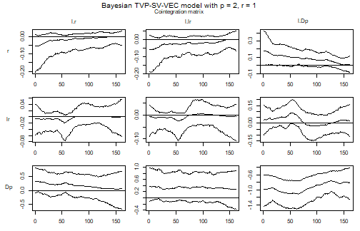
plot of chunk paths
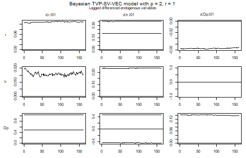
plot of chunk paths
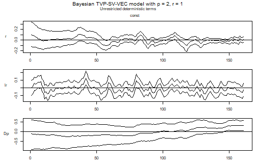
plot of chunk paths
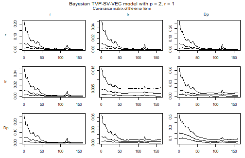
plot of chunk paths
In the figure of , reading down a column gives the response of each differenced series to the level of one variable, and reading across a row gives the error correction of one equation. A panel that sits at zero among the coefficients is one that variable selection has switched off.
A single element of
is easier to read on its own. The following computes it from the draws
of the loadings, which are the first
coefficients of each period of posterior$a$coeffs, and the
draws of the cointegration vectors in
posterior$beta$coeffs.
pi_path <- function(object, equation, variable, ci = 0.9) {
k <- object[["model"]][["k"]]
r <- object[["model"]][["rank"]]
m <- ncol(object[["data"]][["train"]][["z"]])
k_ect <- ncol(object[["data"]][["train"]][["w"]])
tt <- nrow(object[["data"]][["train"]][["y"]])
draws <- nrow(object[["posterior"]][["a"]][["coeffs"]])
i <- which(object[["model"]][["endogen"]] == equation)
j <- which(dimnames(object[["data"]][["train"]][["w"]])[[2]] == variable)
result <- matrix(NA_real_, draws, tt)
for (period in 1:tt) {
alpha <- object[["posterior"]][["a"]][["coeffs"]][, (period - 1) * m + 1:(k * r)]
beta <- object[["posterior"]][["beta"]][["coeffs"]][, (period - 1) * k_ect * r + 1:(k_ect * r)]
result[, period] <- rowSums(matrix(alpha, draws, k * r)[, k * 0:(r - 1) + i, drop = FALSE] *
matrix(beta, draws, k_ect * r)[, k_ect * 0:(r - 1) + j, drop = FALSE])
}
bands <- t(apply(result, 2, stats::quantile,
probs = c((1 - ci) / 2, .5, 1 - (1 - ci) / 2)))
stats::ts(bands, start = stats::start(object[["data"]][["train"]][["y"]]),
frequency = stats::frequency(object[["data"]][["train"]][["y"]]))
}
path <- pi_path(model, equation = "r", variable = "l.r")
stats::ts.plot(path, lty = c(2, 1, 2),
main = "Short-term rate: adjustment to its own level",
ylab = "Element of Pi")
abline(h = 0, lty = "dotted")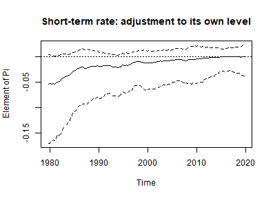
plot of chunk pi-path
The band of this element is widest in the early 1980s and narrows over the sample, while its median rises from about -0.05 to zero: whatever adjustment of the short-term rate to its own level there is fades out over the four decades.
Note what is not plotted here. The path of on its own is not a quantity to read: a cointegration vector is identified only up to normalisation, and normalising it on a variable whose coefficient wanders near zero produces a path that swings between large values without anything having happened to the model. carries the same information and is identified.
The volatilities are extracted from the draws of the error precision exactly as in the VAR case.
volatility <- function(object) {
k <- object[["model"]][["k"]]
kk <- k * k
tt <- nrow(object[["data"]][["train"]][["y"]])
draws <- object[["posterior"]][["u_sigma_inv"]][["coeffs"]]
result <- matrix(NA_real_, tt, k)
for (i in 1:tt) {
result[i, ] <- rowMeans(apply(draws[, (i - 1) * kk + 1:kk], 1,
function(x) {sqrt(diag(solve(matrix(x, k))))}))
}
stats::ts(result, start = stats::start(object[["data"]][["train"]][["y"]]),
frequency = stats::frequency(object[["data"]][["train"]][["y"]]),
names = object[["model"]][["endogen"]])
}
plot(volatility(model),
main = "Posterior mean of the residual standard deviations")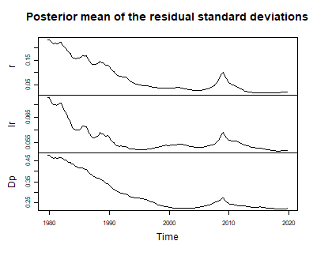
plot of chunk volatility
For these data the volatility block does most of its work in the equation of the short-term interest rate. Its residual standard deviation falls from about a quarter of a percentage point in the early 1980s to a tenth of that once the rate approached its lower bound, with a brief return during the financial crisis. A model that averaged over the sample would report credible bands for the 2010s that are far too wide. The volatilities of the other two equations move much less: the one of inflation falls by about half until 2000, the one of the long-term rate by about a quarter, most of it in the first half of the 1980s.
A prior centred on the maximum likelihood estimate
The prior used above says nothing about where the cointegration space lies: under the marginal prior of is uniform in every period. The working paper version of Koop, León-González and Strachan (2011) shows how to centre it on a given space instead, by putting into the transition of the state equation,
The part of along keeps the autocorrelation and the part off it decays faster, so the mode of the marginal distribution of is in every period, while the space of one period is still centred near the space of the period before.
With
coint = list(rho = 0.999, p_tau_i = "ml", weight = 1),
add_priors takes
from Johansen’s (1995) maximum likelihood estimate of the space and
chooses
so that the prior spread of
around it in each period matches the sampling variance of that estimate,
with weight counting how many samples’ worth of information
the prior adds. The state before the sample gets the stationary
distribution of the new state equation. The estimate is computed from
the error correction term as it is stored in the model, here on the
scale of the data.
model_ml <- create_bvecmodel(data, p = 2, r = 1, const = "unrestricted",
tvp = TRUE, error = "sv+covar", varsel = "bvs",
iterations = 3000, burnin = 1000)
model_ml <- add_priors(model_ml,
coef = list(v_i = 1, v_i_det = 1 / 10,
shape = 3, rate = 0.000001, rate_det = 0.01),
coint = list(rho = 0.999, p_tau_i = "ml", weight = 1),
sigma = list(shape = 3, rate = 0.01,
mu = 0, v_i = 0.01,
state_variance = 0.05, offset = 1e-8),
varsel = list(inprior = 0.5, exclude_det = TRUE))How informative this prior can be is bounded by
:
even
leaves the space
of room to move in each period. Where the sampling variance of the
estimate in some direction is smaller than that, add_priors
sets
to zero in that direction and warns. On these data both directions off
stay above the bound, so the prior matches the sampling variance without
a warning. The eigenvalues of the transition that was stored show the
outcome – one for the direction of
itself, and one for each direction off it:
round(eigen(model_ml[["priors"]][["beta"]][["p_tau"]], symmetric = TRUE)$values, 3)
#> [1] 1.000 0.989 0.168
set.seed(20260913)
model_ml <- add_initial_values(model_ml)
model_ml <- add_posterior_coefficients(model_ml)The same element of as above, with the bands under the noninformative prior in grey:
path_ml <- pi_path(model_ml, equation = "r", variable = "l.r")
stats::ts.plot(path, path_ml, lty = c(2, 1, 2, 2, 1, 2),
col = rep(c("grey60", "black"), each = 3),
main = "Short-term rate: adjustment to its own level",
ylab = "Element of Pi")
abline(h = 0, lty = "dotted")
legend("bottomleft", legend = c("Noninformative", "Centred on ML"),
col = c("grey60", "black"), lty = 1, bty = "n")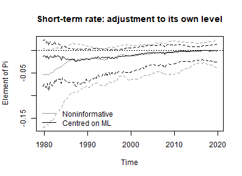
plot of chunk ml-prior-path
Averaged over the sample, the width of the 90% bands of every element of under the prior centred on the maximum likelihood estimate, relative to the noninformative one – rows are the variables in the error correction term, columns the equations:
band_width <- function(object) {
sapply(object[["model"]][["endogen"]], function(equation) {
sapply(dimnames(object[["data"]][["train"]][["w"]])[[2]], function(variable) {
bands <- pi_path(object, equation = equation, variable = variable)
mean(bands[, 3] - bands[, 1])
})
})
}
round(band_width(model_ml) / band_width(model), 2)
#> r lr Dp
#> l.r 0.66 0.67 0.76
#> l.lr 0.62 0.52 0.78
#> l.Dp 0.81 0.84 1.05A ratio below one means that the prior centred on the maximum
likelihood estimate narrows the band of that element. Here it does so
for all elements but one, most for the adjustment to the lagged
long-term rate, while the band of the adjustment of inflation to its own
level is about five percent wider than under the noninformative prior.
It need not narrow every band, and that is a property of how the prior
is built rather than a failure of it: a larger weight makes
the prior tighter by lowering
,
but
is also how much of the position of the space carries over from one
period to the next. In a direction where
is zero, the position does not carry over at all, each period is
informed by its own data alone, and the posterior in that direction can
be wider than under the noninformative prior – see
?add_priors.bvecmodel. How this plays out for the elements
of
depends on how the directions of the space line up with the
variables.
Two further things to keep in mind. First, the centre is estimated from the same sample the model is estimated on, so the data enter twice, and where the bands do narrow they overstate how precisely the space is known. Second, and most important for these data, is the estimate of a constant space. Centring every period on it pulls the path towards the average of the sample, which works against the question the model is estimated to answer, whether the long-run relationship moved. A prior like this is best suited to a model whose cointegration space is expected to move around a stable centre, rather than to drift away from one.
Impulse responses and forecasts
Impulse responses and variance decompositions of a VEC model are
obtained from its VAR representation in levels, which
vec_to_var computes draw by draw. A time varying model is a
VEC model per period, so the transformation is applied period by period,
and the result is a VAR model with time varying parameters:
bvar_form <- vec_to_var(model)
bvar_form[["model"]][["algorithm"]]
#> [1] "VarTvpStochvol"The draws of the variances of the state equations of the VEC coefficients and of are not carried over: they describe how the coefficients of the VEC model drift and have no counterpart among the coefficients in levels. The paths of the coefficients and the draws of the error term are, and they are all the application functions need.
Impulse responses and forecast error variance decompositions are
those of one period, which argument period selects, the
last period being the default. The response of inflation to a shock to
the short-term interest rate in 1985Q1:
feir <- irf(bvar_form, impulse = "r", response = "Dp", n_ahead = 20,
period = period_of(model, 1985, 1))
plot(feir, main = "Forecast error impulse response, 1985Q1",
xlab = "Period", ylab = "Response")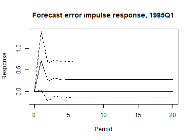
plot of chunk feir-1985
Forecasts are made from the VEC model itself.
add_forecast_input prepares the regressors of the forecast
periods, in levels, and add_posterior_forecasts simulates
each draw forward from the last period of the sample: the loadings, the
short-run coefficients and the volatilities take a step of their random
walks every quarter, the cointegration vectors a step of their state
equation, and the VAR in levels is rebuilt from them in every period.
The bands therefore reflect both the uncertainty about where the
coefficients are at the end of the sample and the drift the model allows
after it.
model <- add_forecast_input(model, n_ahead = 8)
model <- add_posterior_forecasts(model)
plot(predict(model, n_ahead = 8), n_pre = 20)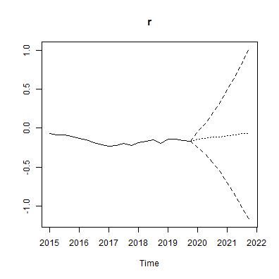
plot of chunk forecasts
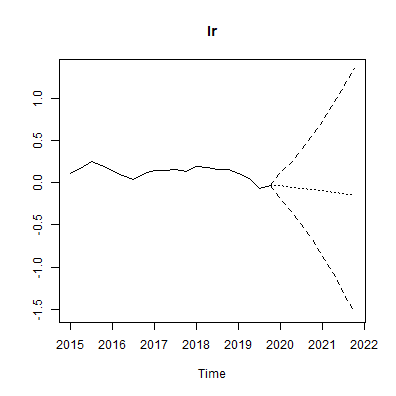
plot of chunk forecasts
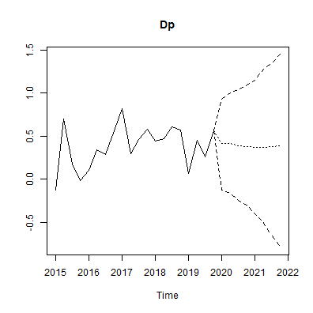
plot of chunk forecasts
The VAR representation above has no state equation for its
coefficients in levels, so it can only hold them at their values in the
last period. forecast_states = "hold" gives that forecast
from the VEC model as well. The width of the 90% intervals eight
quarters ahead shows what the drift adds:
held <- add_posterior_forecasts(model, forecast_states = "hold")
interval_width <- function(object) {
fcst <- predict(object, n_ahead = 8)[["fcst"]]
apply(fcst[8, , ], 1, function(x) diff(stats::quantile(x, c(0.05, 0.95))))
}
round(rbind(simulated = interval_width(model), held = interval_width(held)), 2)
#> r lr Dp
#> simulated 1.83 2.38 1.8
#> held 0.71 1.21 1.2Eight quarters ahead, carrying the drift forward about doubles the interval of the long-term rate, widens that of inflation by half and makes that of the short-term rate between two and three times as wide. A forecast that holds the coefficients at the end of the sample understates the uncertainty this model implies.
The constant coefficient model with stochastic volatility, estimated
with tvp = FALSE, remains the model a TVP-SV specification
has to beat. The two can be compared out of sample by estimating both
over an expanding window with use_expanding_window and
forecasting the models of its windows directly:
add_forecast_input and add_posterior_forecasts
take VEC models, forecast them in levels and, for the time varying one,
simulate its cointegration vectors and volatility forward over the
forecast horizon.
Citing bvartools
If you use bvartools in published work, please cite it.
citation("bvartools") prints the reference, and the package
has the DOI 10.5281/zenodo.22736604,
which always resolves to the latest archived version.
References
Johansen, S. (1995). Likelihood-based inference in cointegrated vector autoregressive models. Oxford: Oxford University Press.
Koop, G., León-González, R., & Strachan R. W. (2011). Bayesian inference in a time varying cointegration model. Journal of Econometrics, 165(2), 210-220. https://doi.org/10.1016/j.jeconom.2011.07.007
Koop, G., León-González, R., & Strachan R. W. (2010). Efficient posterior simulation for cointegrated models with priors on the cointegration space. Econometric Reviews, 29(2), 224-242. https://doi.org/10.1080/07474930903382208
Korobilis, D. (2013). VAR forecasting using Bayesian variable selection. Journal of Applied Econometrics, 28(2), 204-230. https://doi.org/10.1002/jae.1271
Lütkepohl, H. (2006). New introduction to multiple time series analysis (2nd ed.). Berlin: Springer.
Primiceri, G. E. (2005). Time varying structural vector autoregressions and monetary policy. Review of Economic Studies, 72(3), 821-852. https://doi.org/10.1111/j.1467-937X.2005.00353.x